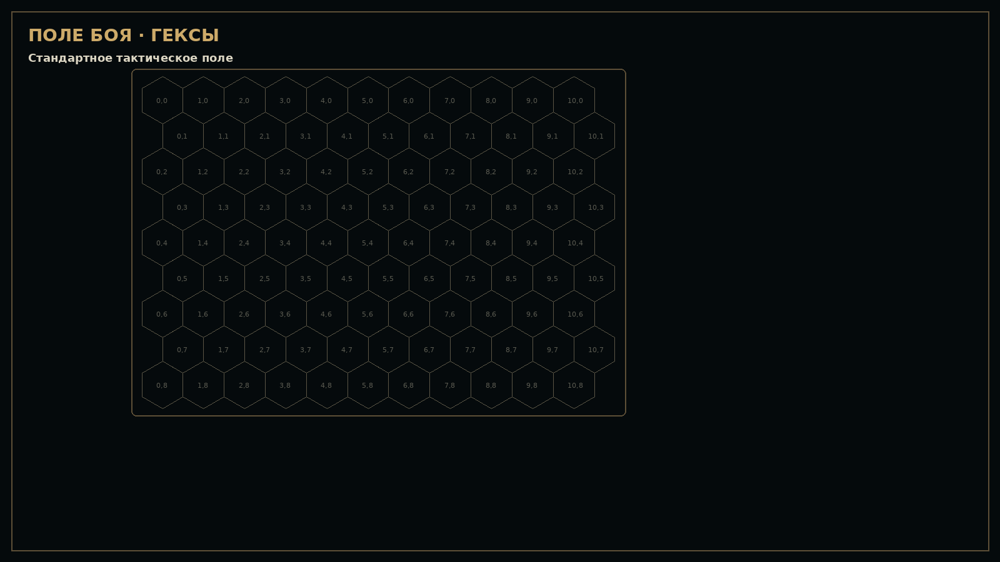
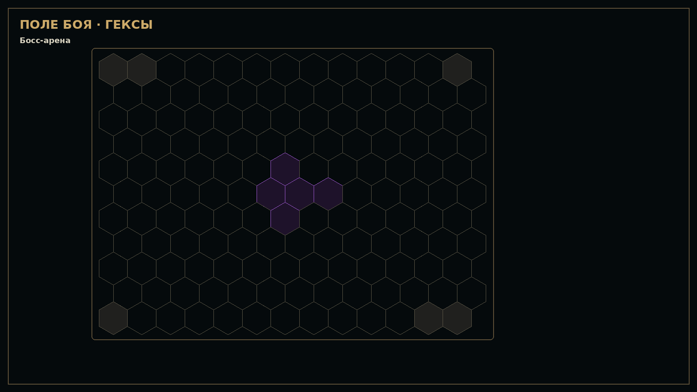
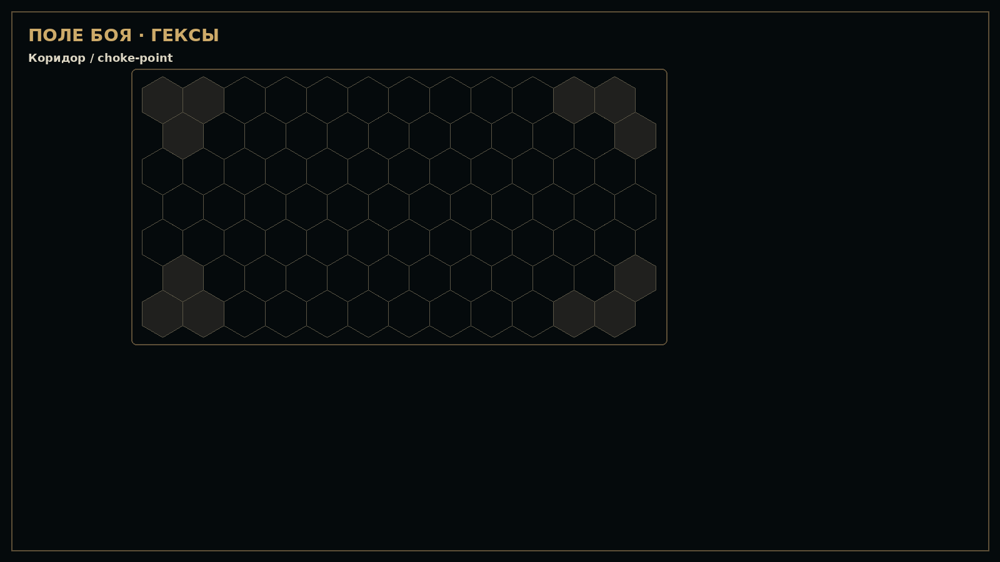
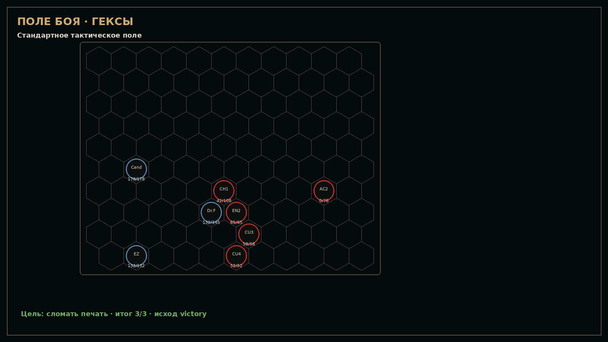

WoW Raiders · v0.40 Codex Handoff + Hex Field Standard
Архив готов для ПК/Codex/GitHub. Главная фиксация: hex-поле в UI — прямоугольная тактическая арена, не клин.
STANDARD_TACTICAL_FIELD · 11×9

BOSS_ARENA · 13×11

CORRIDOR_CHOKEPOINT · 12×7

Raid 01 v0.39 · rectangular hex state
